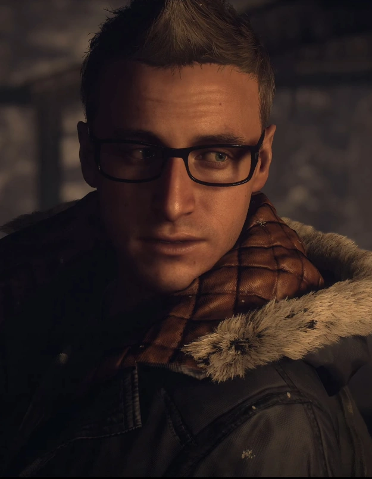

So remember when I said that Sam was the only person who didnt participate in the prank... well Chris didnt either. He was drunk and asleep the whole time.
Chris is introduced to us as a class clown and Josh's best friend. He has a really bright energy throughout the first sections of the game, and lightens the mood. Him and Ashley basically spend the whole beginning together, and they both get knocked out after a ouija board segment and the subsequent basement segment.
Ashley and Chris spend the entire middle portion of the game getting tortured by Josh, and when they find out the killer's identity, Chris is the one who volunteers to tie Josh up, but is also the first person to try and save him.
Chris fades into the background in the latter half of a game, becoming a shell of his former character after his possible death in Chapter 7. He basically just follows the rest of the crew through the end of the game.
Chris is a fun character who gets sidelined too much after his inital story. I think his lack of character development is an issue, so while hes fun anda good edition to the group,him on his own isnt very compelling. Ashley really helps give Chris more depth, and I think works well as this remedy.
Chris's Score: 6/10
